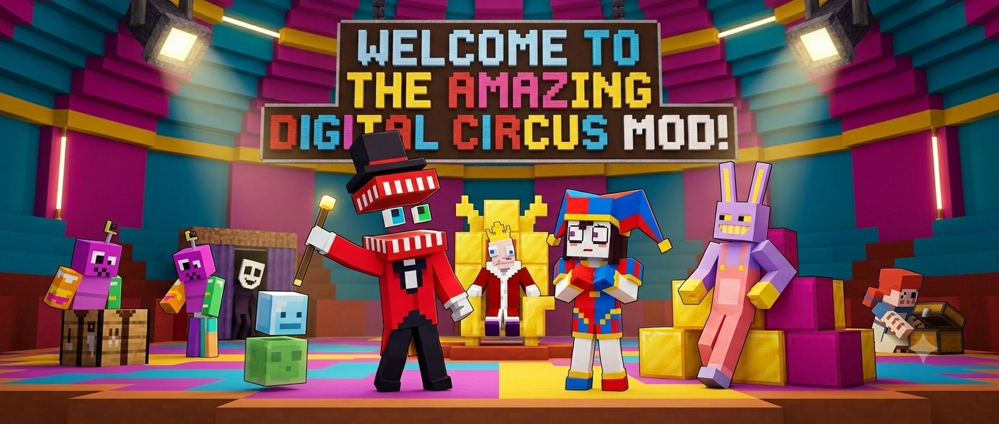
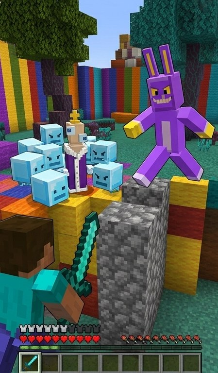
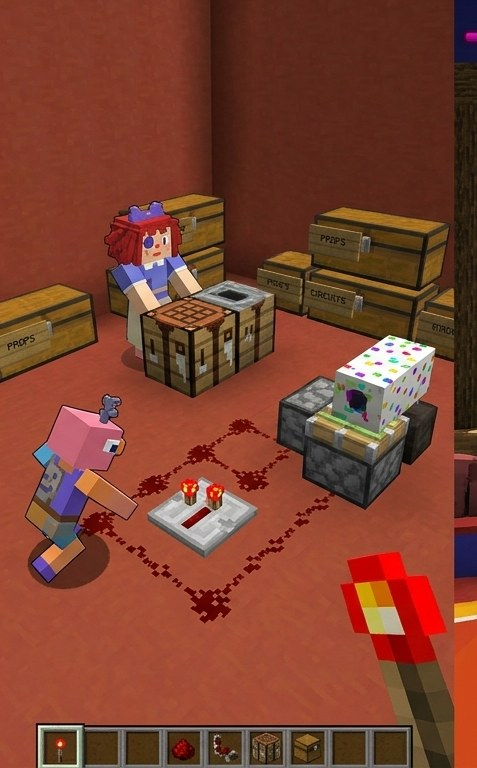

Always on your side
Every character is neutral to the player. No friendly fire, no surprises — they simply fight alongside you.
For Minecraft Bedrock & Java Edition · free download
Eight custom characters join your world as friendly allies — they never turn on you, they hunt down hostile monsters, and they follow you into every fight. Spawn them with eggs and let the circus fight by your side.
What it is
.mcaddonEvery character is neutral to the player. No friendly fire, no surprises — they simply fight alongside you.
They target the hostile monster family — zombies, skeletons, creepers, spiders — and engage automatically.
Each character gets its own spawn egg, so you can drop your favorites wherever you build.
No experimental features required. Send the file, tap it, enable both packs — you're playing.
The cast
Meet the eight in-game characters — each spawns as its own friendly ally, ready to fight at your side.
The anxious harlequin. Red-and-blue split costume, white face, a belled hat — and a balanced fighter who sticks close.
The grinning ringmaster in a red tailcoat and top hat. The tanky heavy-hitter of the troupe — he leads the charge into the monsters.
A tall purple rabbit with long ears and yellow accents. Mischievous, quick, and always up for a brawl.
Red yarn hair, a patchwork body, and button eyes. Sweet-natured but steady in a fight.
A thin, floaty ribbon creature in red and pink, wearing a comedy/tragedy mask. Delicate but always present.
A tall, narrow chess-king piece in purple and blue, crowned, with big googly eyes. Eccentric and loyal.
A boxy jumble of mismatched toy parts in clashing colors, topped with a single antenna-eye. No two angles look alike.
Caine's tiny floating sidekick — a little sphere with a face. Fast and darting, but the most fragile of the bunch.
How they fight
Think tamed wolf, but make it a circus. Spawn any character with its egg, then feed it gold nuggets to make it yours — once the hearts pop up, it's a loyal follower that fights at your side for good.
🎪 Secret — Caine's monster surprise: land 6 hits on Caine and the grinning ringmaster snaps into his terrifying monster form — and starts hitting twice as hard. Pick a fight with him at your own risk!
In game
Real screenshots from Minecraft Bedrock on iPad — the mod, actually running.



Get playing
The same circus crew for Minecraft Bedrock and Java. Grab your version and follow the steps.
One file, one tap. No experimental toggles required.
Download for BedrockThe button above saves TADC-iPad-v2.mcaddon to your device. On iPhone/iPad it lands in Files ▸ Downloads; on Android, your Downloads folder.
Tap the downloaded .mcaddon (in the Files app or your browser’s downloads). Minecraft launches on its own — wait for the green ✅ “Successfully imported” message.
Tap Play ▸ Create New World. Open Behavior Packs, tap Amazing Digital Circus ▸ Activate, then do the same under Resource Packs. Both must move to the “Active” side.
Start the world, open the creative inventory and search spawn egg. Place any of the 8 characters, then feed gold nuggets to tame them.
Fabric loader · Minecraft 1.21.11 · Java 21+.
Download for JavaIn the official launcher, play version 1.21.11 at least once so its files exist. Make sure Java 21+ is installed.
Download & open the Fabric installer, choose Minecraft 1.21.11, and click Install. It adds a “fabric-loader 1.21.11” profile to your launcher.
Download the Fabric API .jar for 1.21.11. The mod will not load without it.
.jars in the mods folderOpen your .minecraft folder (paths below), create a mods folder if there isn’t one, and put amazing-digital-circus-1.0.0.jar and Fabric API inside.
In the launcher pick the fabric-loader 1.21.11 profile and hit Play. Spawn the crew from the creative menu, then feed gold nuggets to tame.
Can't find the mods folder? On Windows open %appdata%\.minecraft · on macOS ~/Library/Application Support/minecraft · on Linux ~/.minecraft.